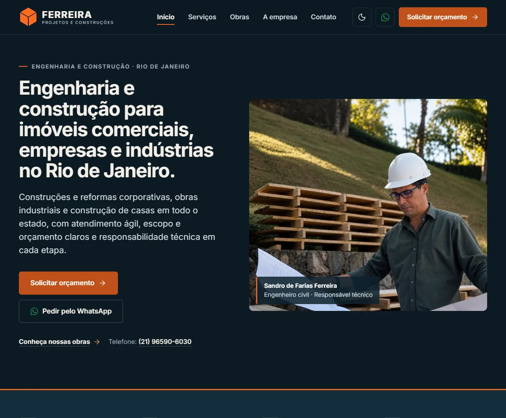
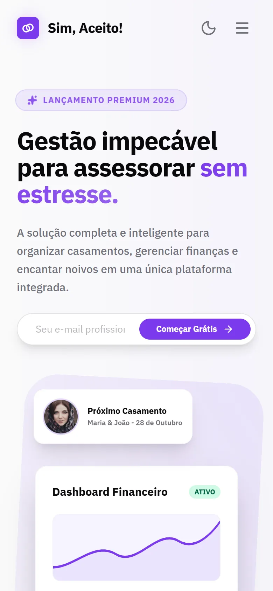

Sobre
Estou no 6º período de Ciência da Computação na UVA Tijuca e concluí o curso técnico em Desenvolvimento de Sistemas no SENAI em 2025. Desde fevereiro de 2026, sou estagiário de Análise de Sistemas na Microware, na área de Transformação Digital.
Meu foco está no que sustenta um sistema: modelar processos, automatizar etapas, integrar aplicações por APIs e trabalhar com dados. Paralelamente, faço front-end, UX/UI e design gráfico. Essa combinação me ajuda a pensar tanto em como uma solução funciona quanto em como as pessoas vão usá-la.
Competências e ferramentas
- Processos e automação
- BPMN
- Camunda 7
- Bizagi Studio
- Integração e dados
- APIs REST
- JSON e XML
- SQL Server
- Linguagens
- Python
- Groovy
- SQL
- IA aplicada
- Agentes de IA
- Azure AI Foundry
- MCP
- Interface
- HTML, CSS e JavaScript
- UX/UI
- Design gráfico
- Versionamento
- Git e GitHub
Experiência
Profissional
-
– atual Atual
Microware
Estagiário de Análise de Sistemas, área de Transformação Digital
Descrevo as atividades em nível geral. Clientes, dados e detalhes de projetos internos são confidenciais.
Formação
-
Em andamento, 6º período Atual
Ciência da Computação
UVA, Universidade Veiga de Almeida, campus Tijuca
-
Concluído em
Técnico em Desenvolvimento de Sistemas
SENAI
Projetos
Projetos publicados, com o que fiz em cada um. Quando o trabalho foi feito em equipe, descrevo apenas a minha contribuição.
Design gráfico
Além do desenvolvimento, faço trabalhos de identidade visual, logotipos, catálogos e materiais de divulgação. É uma parte complementar do meu perfil, e é dela que vem a atenção a hierarquia, tipografia e consistência que levo para as interfaces.
Vamos conversar
Para oportunidades, projetos ou colaborações, escolha o canal que preferir.